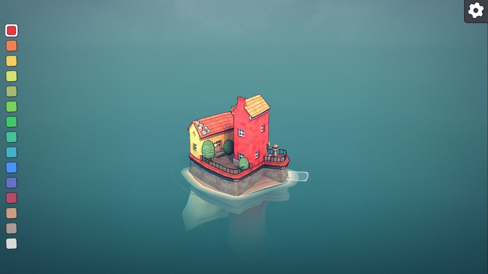
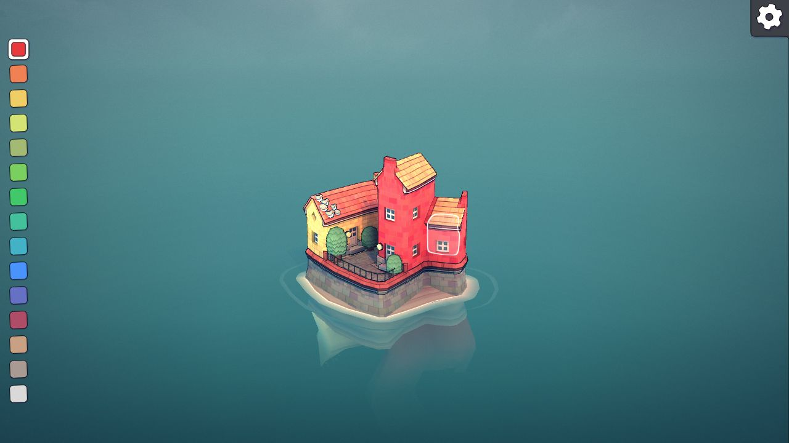
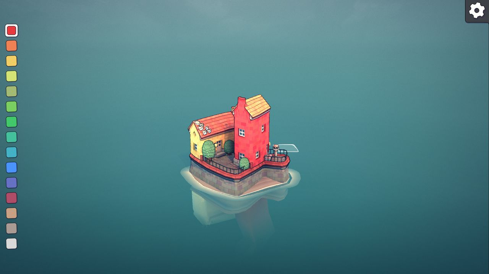

2026-10-22〜23 · ベンチマーク監査と独立した再現テスト。参照作品の内部実装を特定したものではありません。
子どもが普段の操作で島を変え、美しい景色と住人の暮らしが一緒に変わり、その島を明日も続けられること。
既存調査は、輪郭や接合の仮説を絞るところまで進んでいました。次に必要なのは、同じ編集から形・床・通路・利用地点を一貫して作れる証拠です。
Townscaperの公式デモを実操作。Tiny Gladeの操作履歴、Foundationの入口・経路を含む部品制作の公式資料を追加しました。チャッピーへ公開資料を使って再相談し、方式採用にはまだ証拠が足りないと判断しました。
次の比較：同じ土地・所有物で二つの場所を作り、住人が使い、戻し、再読込しても続く。両配置の美術も同時に比較します。三つの全島・学習・再訪という最終目標は維持します。



Townscaper公式デモで確認。これは造形の応答の証拠です。住人の実利用・保存・スマートフォン性能は今回未検証です。
土と石の対角配置。左右はセルの配列順だけが異なります。既存の三角形生成器をそのまま使った上面図です。
土 → 石
石 → 土
中央の穴
対角接続
1区画の隙間
幅 0.15 では対角が離れ、0.35 では中央穴が埋まる。0.25 はこの入力集合では両立します。青＝空き、白＝地形。
4隅が二値なら16状態・回転をまとめると6群。3段階なら81状態・24群、4段階なら256状態・70群です。これは必要な手作りモデル数ではありません。
共有する辺の値を一致させる独立試作では、12,393点の境界検査で位置のズレ0。1点の編集対象は4区画。ただし法線・崖・実床・装飾は別の契約が必要です。
隣接する二つの地形を同じ高さ・違う高さで比較しました。どちらも経路上の101点に床がある一方、高さを変えると最大0.55の段差が生じます。実験用の許容段差0.2では通行不成立でした。
この値はSansuの仕様ではなく、点で歩行を代用した診断です。実住人の幅・斜面・編集途中の安全は別に検証します。「床がある」から「住人が使える」へ飛躍できない反例です。
Foundationの公式制作資料は、モデルに入口と経路を持たせる方法を示しています。見た目だけでなく使い方まで含む部品を、連続地形と接続部品の両案で試す根拠になります。